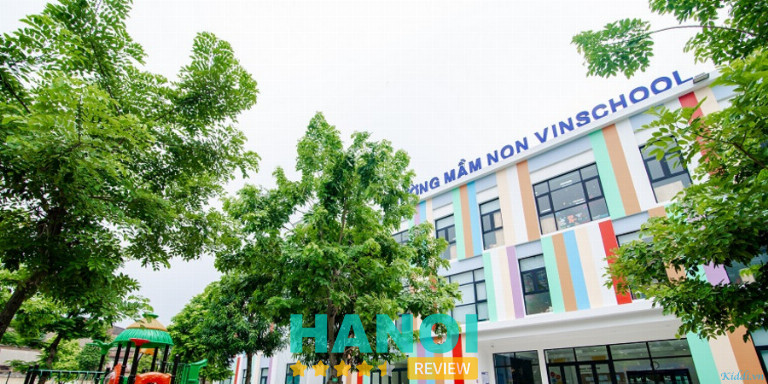
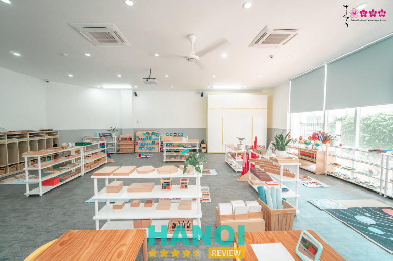
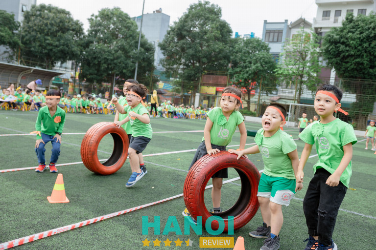
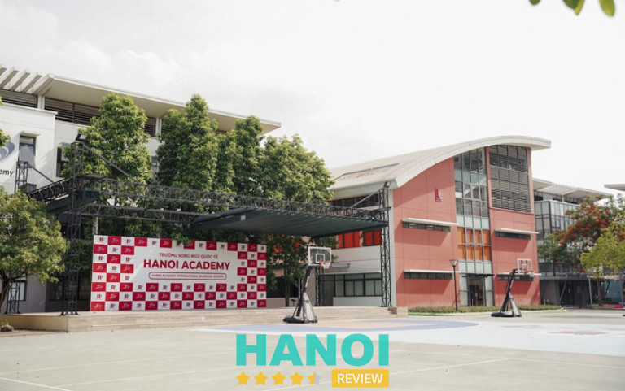
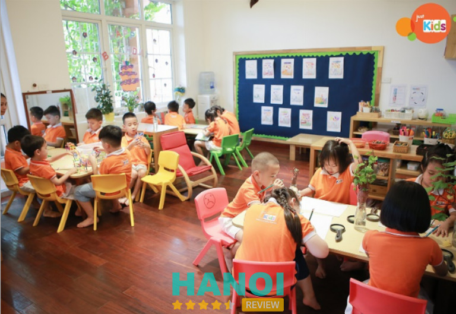
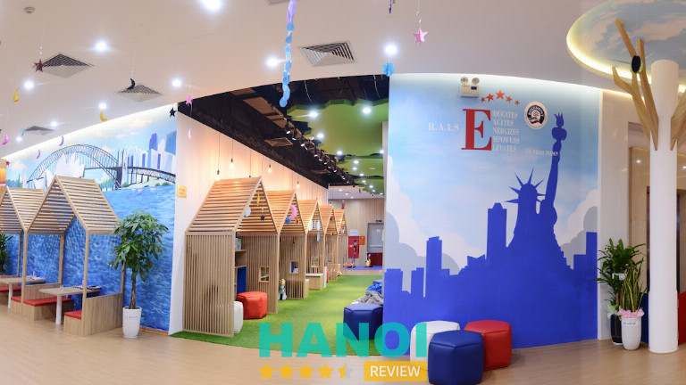
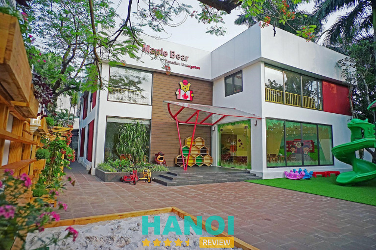
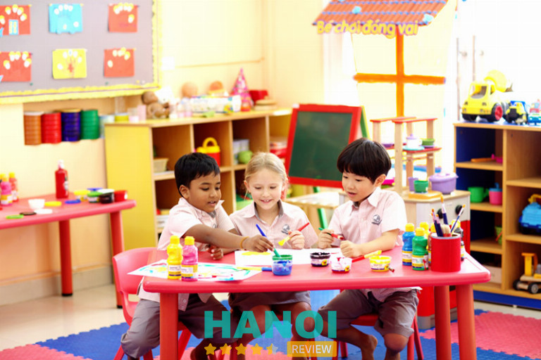
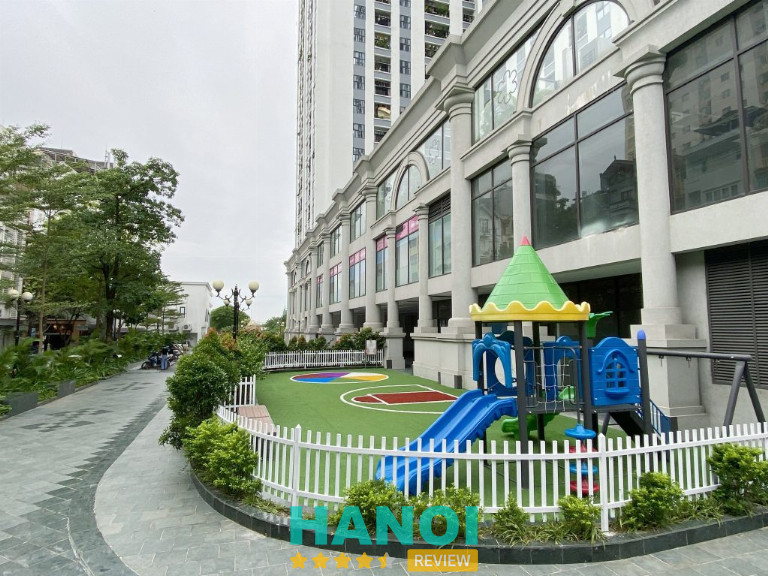

10 Trường mầm non quốc tế tại Hà Nội uy tín, được đánh giá cao
Các trường mầm non quốc tế tại Hà Nội hoạt động ngày càng nhiều khiến không ít phụ huynh lúng túng trong việc tìm kiếm và lựa chọn môi trường học tập tốt cho con em mình. Nếu bạn còn đang lăn tăn vấn đề trên thì hãy tham khảo qua bài viết dưới đây.
Top 10 trường mầm non quốc tế tại Hà Nội chất lượng tốt
Trường mầm non đạt tiêu chuẩn quốc tế với chương trình giáo dục chất lượng sẽ tạo điều kiện để các bé phát triển toàn diện trong giai đoạn đầu đời.
Trong bài viết này, HaNoiReview sẽ giới thiệu danh sách 10 trường mầm non quốc tế được phụ huynh đánh giá cao tại khu vực Hà Nội để quý bạn đọc tham khảo và dễ dàng chọn lựa ngôi trường phù hợp.
Vinschool Gardenia
Vinschool Gardenia là trường mầm non quốc tế ở Hà Nội được phụ huynh đánh giá cao. Đơn vị có chương trình giáo dục mầm non theo hệ quốc tế IPC của Mỹ và được điều chỉnh lại để phù hợp với nền văn hóa Việt Nam. Do đó, khi cho con theo học chương trình này của khối lớp mầm non Vinschool, bạn hoàn toàn có thể yên tâm về chất lượng đào tạo vì đã có gần 200 trường trên thế giới áp dụng.
Tại Vinschool, các bé sẽ được vừa học vừa chơi theo xu hướng tự trải nghiệm khám phá để rèn luyện các kỹ năng mềm. Bên cạnh việc chú trọng và kỹ năng tự lâp, quản lý cảm xúc các bé còn được học tiếng Anh từ sớm với giáo viên bản ngữ. Qua đó giúp trẻ có cơ hội học tập và làm việc trong môi trường đa quốc gia mà không bị trở ngại vì rào cản ngôn ngữ.

Trường có không gian và cơ sở vật chất hiện đại với sân chơi rộng rãi, nhiều phòng học được phân cấp theo từng chức năng để bé có thể hoạt động vui chơi và học tập một cách tốt nhất, các khu vực hành lang ngoài lớp cũng được bố trí tủ đựng đồ cá nhân riêng.
Nhờ sở hữu đội ngũ giáo viên giỏi, có chứng chỉ nghiệp vụ mầm non, đồng thời được đào tạo quy trình giảng dạy bài bản, có lòng yêu trẻ và tinh thần trách nhiệm cao. Các thầy cô luôn biết cách tạo ra môi trường học tập đầy hăng say, hứng khởi và hỗ trợ mọi vấn đề trong học tập và sinh hoạt mỗi khi các bé cần sự giúp đỡ.
Một ưu điểm nổi trội của trường mầm non quốc tế Vinschool đó là thực đơn ăn uống của các bé luôn được xây dựng và theo dõi bởi các chuyên gia dinh dưỡng hàng đầu Việt Nam. Đảm bảo, mỗi ngày các bé sẽ được ăn uống ngon miệng với những thực đơn đa dạng. Ngoài ra, trẻ còn được rèn luyện phong cách tự phục vụ bữa ăn cho mình để bé hình thành những thói quen và nhân cách tốt.
Thông tin liên hệ:
- Địa chỉ: KĐT Vinhomes Gardenia Mỹ Đình, Hàm Nghi, P. Cầu Diễn, Q. Nam Từ Liêm, Hà Nội
- Điện thoại: 0243 975 3333
- Email: info@vinschool.edu.vn
- Website: vinschool.edu.vn
- Fanpage: FB.com/vinschool.vn
Xem thêm: 5 Trung tâm dạy kỹ năng sống cho trẻ tại Hà Nội chất lượng nhất
Trường quốc tế Nhật Bản (JIS)
JIS là cái tên trường mầm non tiếp theo mà bài viết muốn gợi ý đến bạn. JIS là trường quốc tế đào tạo theo mô hình giáo dục Nhật Bản và có hệ liên cấp từ mầm non đến cấp ba. Trường có hai hệ đào tạo quốc tế bao gồm, chương trình giáo dục Nhật Bản và Cambridge. Cam kết đầu ra đạt chuẩn và thành thạo hai ngoại ngữ Anh – Nhật. Đồng thời mở rộng cơ hội du học. Do đó, phụ huynh hoàn toàn có thể gửi gắm con theo học hệ mầm non tại JIS.
Đối với chương trình giáo dục mầm non, đơn vị tập trung vào việc tiếp thu ngôn ngữ thông qua hình thức giao tiếp song ngữ Việt – Anh. Học viện cũng chú trọng rèn luyện các kỹ năng mềm, tinh thần tự khám phá – học hỏi – sáng tạo. Bên cạnh đó, JIS thường xuyên tổ chức các hoạt động ngoại khóa thú vị để gắn kết cũng như tạo điều kiện để các em phát triển bản thân một cách toàn diện. Các bằng cấp, chứng chỉ học tập của trường được các trường quốc tế trên thế giới công nhân cũng là một ưu điểm nổi bật của JIS.
Về cơ sở vật chất của trường đều có chất lượng đạt tiêu chuẩn. Không chỉ đầu tư mạnh vào hệ thống thiết bị phục vụ trong phòng học, JIS còn tạo ra một khu vườn nông trại rau sạch riêng để các bé có những buổi trải nghiệm thực tế thú vị, an toàn.
JIS có đội ngũ giáo viên trong và ngoài nước với trình độ chuyên môn cao, kỹ năng nghiệp vụ sư phạm tốt. Đảm bảo sẽ chăm sóc và giảng dạy cách bé tận tình, chu đáo. Các cô cũng rất hiểu tâm lý và lắng nghe những chia sẻ của trẻ, từ đó làm cầu nối gắn kết giữa trẻ với gia đình của mình.
Trong quá trình tham gia lớp học, các bé sẽ được thoải mái vui chơi, sáng tạo và phát triển tư duy của mình qua những hoạt động bổ ích, giảm gánh nặng về các kiến thức lý thuyết. Hơn nữa, trẻ sẽ được rèn luyện nề nếp và đạo đức theo chuẩn mực của người Nhật để giáo dục lòng bác ái, chia sẻ yêu thương và cũng giúp trẻ biết tự lập ngay từ khi còn nhỏ. Chương trình học ngôn ngữ Việt và Nhật kết hợp tiếng Anh dưới sự dẫn dắt của 100% giáo viên bản ngữ sẽ được diễn ra từ 4 – 5 giờ/tuần.
Thông tin liên hệ:
- Địa chỉ: 84A Nguyễn Thanh Bình, P. Vạn Phúc, Q. Hà Đông, Hà Nội
- Điện thoại: 0979 860 088
- Email: truongquoctenhatban@jis.edu.vn
- Website: jis.edu.vn
- Fanpage: FB.com/JISVietnam
Sakura Montessori (SMIS)
Sakura Montessori là hệ thống trường mầm non đầu tiên tại Việt Nam đặt nền móng ứng dụng phương pháp đào tạo Montessori đạt chuẩn quốc tế. Kể từ khi thành lập vào năm 2011, sau gần 12 năm hoạt động trường đang ngày càng nhận được nhiều sự quan tâm của phụ huynh. Nơi đây được xem làm một trong những ngôi trường có chất lượng giáo dục mầm non tốt bậc nhất ở Hà Nội.
SMIS xây dựng cơ sở hạ tầng hiện đại với hệ thống phòng ốc được thiết kế theo từng phòng cách độc đáo riêng để tạo ra nguồn cảm hứng cho trẻ vui chơi và học tập mỗi ngày. Trang thiết bị sử dụng trong giảng dạy và học tập đều là những công nghệ tiên tiến. Ngoài đầu tư phòng học, SMIS cũng chú trọng bố trí khu vui chơi an toàn, phòng chức năng tân tiến để phục vụ nhiều như cầu khác nhau của học sinh.

Mỗi bữa ăn của trẻ được thay đổi các món ăn đa dạng theo từng ngày. Để đảm bảo sức khỏe cho trẻ, mỗi loại thực phẩm trước khi chế biến được đơn vị lựa chọn kỹ càng về nguồn gốc xuất xứ, chất lượng tươi mới. Với đội ngũ nhân viên bếp chuyên nghiệp, đảm bảo thực đơn của con không chỉ đẹp mắt về hình thức trình bày mà còn ngon miệng. Đặc biệt, những món ăn đều được nấu hạn chế chiên rán nhiều dầu mỡ,… nhằm cần bằng dinh dưỡng cho trẻ.
Nhờ áp dụng phương pháp Montessori kết hợp với Common Core trong quá trình giảng dạy sẽ giúp các bé nhanh chóng phát triển toàn diện về tư duy và nhân cách, đồng thời tăng sự hứng thú, sáng tạo trong học tập. Bên cạnh đó, với đội ngũ giáo viên Việt Nam và bản ngữ đều được tốt nghiệp chuyên ngành mầm non – tâm lý, có các chứng chỉ giảng dạy như TESOL, TEFL, CELTA,… sẽ giúp bé hình thành tư duy phản xạ tiếng Anh tự nhiên cùng những kỹ năng khác. Từ đó, tạo tiền đề vững chắc để các bé có hành trang tốt nhất trước khi bước vào chương trình bậc tiểu học.
Thông tin liên hệ:
- Địa chỉ: Khu Goldsilk Complex, Vạn Phúc, Q. Hà Đông, Hà Nội
- Điện thoại: 0247 102 2288
- Email: contact@sakuramontessori.edu.vn
- Website: sakuramontessori.edu.vn
- Fanpage: FB.com/SakuraMontessori.edu.vn
Xem thêm: 5 Trung tâm đào tạo thiết kế đồ họa tại Hà Nội uy tín hàng đầu
Trường mầm non quốc tế IQ
Khi nhắc đến danh sách các trường mầm non quốc tế ở khu vực Hà Thành, IQS chắc chắn là cái tên không nên bỏ qua. Trường IQ có mô hình giáo dục mầm non đạt tiêu chuẩn quốc tế, hứa hẹn sẽ giúp các bé phát triển toàn diện từ trí tuệ, nhân cách đến thể lực.
Dưới sự cố vấn của các chuyên gia giáo dục hàng đầu Việt Nam và trên thế giới như Anh, Mỹ, Nhật, Singapore,… Đơn vị đã thiết kế chương trình giáo dục riêng, đảm bảo phù hợp với từng độ tuổi phát triển của trẻ giúp trẻ nhanh chóng tiếng thu kiến thức cũng như khai phá những tiềm năng mới của mình. Đặc biệt, trẻ được bồi dưỡng tiếng Anh theo hệ Cambridge kết hợp với tiếng Việt nhằm giúp bé phát huy năng lực ngôn ngữ đa chiều, vừa học được ngoại ngữ mới vừa thành thục tiếng mẹ đẻ một cách chuẩn chỉnh.

IQS không áp dụng quá nhiều chương trình kiến thức lý thuyết nặng nề mà lồng ghép các hoạt động vui chơi sôi nổi kèm bài học bổ ích, thú vị để các bé dễ dàng tiếp thu và ghi nhớ lâu hơn.
Một số lợi ích nổi bật nếu học tại trường mầm non IQ School:
- Được học tập trong môi trường có hệ thống cơ sở vật chất tốt cùng đội ngũ giáo viên trình độ chuyên môn cao, thấu hiểu tâm lý học sinh
- Thành thạo hai ngôn ngữ chính, gồm: tiếng Việt và tiếng Anh
- Có thể phát triển toàn diện về mọi mặt và khám phá sâu hơn tài năng cá nhân
- Trải nghiệm nhiều chương trình hoạt động ngoại khóa
- Hình thành tư chất đạo đức tốt
Ngoài ra, trường có tổng diện tích lên đến gần 2.000m2 gồm các phòng học, khu vui chơi rộng rãi, thoáng mát và ngập tràn cây xanh để bé thoải mái vui chơi, vận động tăng cường thể lực.
Thông tin liên hệ:
- Địa chỉ: 55 Lê Lai, P. Hà Cầu, Q. Hà Đông, Hà Nội
- Điện thoại: 0933 553 355
- Email: iqhadong@iqschool.edu.vn
- Website: iqschool.vn
- Fanpage: FB.com/IQSchool.vn
Hà Nội Academy
Hà Nội Academy là trường mầm non quốc tế song ngữ nổi tiếng hàng đầu tại Hà Nội. Không chỉ có chương trình giáo dục mầm non, trường còn có hệ thống đào tạo đến trung học phổ thông. Chương trình học của Hà Nội Academy được thiết lập dựa vào mô hình của Anh Quốc, đảm bảo xây dựng nguồn kiến thức chuẩn, đào tạo kỹ năng và tư duy toàn cầu cho các học sinh.
Trường được thành lập từ năm 2009, sau bao năm nỗ lực phấn đấu Hà Nội Academy đã để lại vô vàn những ấn tượng tốt trong lòng học sinh và quý phụ huynh nhờ hệ thống cơ sở vật chất khang trang, chương trình đào tạo chất lượng cùng đội ngũ giáo viên giàu kinh nghiệm, tận tâm.

Khi theo học hệ giáo dục mầm non tại Hà Nội Academy, các em sẽ được hỗ trợ phát triển một cách toàn diện trên 5 lĩnh vực, bao gồm: nhận thức, thể chất, ngôn ngữ, quan hệ xã hội và năng khiếu. Ngoài ra, để nâng cao thể chất cho trẻ học viện còn áp dụng chương trình giáo dục vận động Ready Steady Go Kids. Không những thế, dù được xem là ngôi trường song ngữ quốc tế nhưng khi học tại đây,các con vẫn được giáo dục và hướng dẫn giữ gìn bản sắc văn hóa dân tộc của mình.
Cơ sở vật chất được thiết kế theo phong cách Châu Âu với nhiều không gian xanh để tạo ra những sân chơi lý tưởng dành cho bé. Đồng thời, trường nằm ở vị trí vô cùng thuận lợi, rất tiện để phụ huynh đưa đón con em mình.
Một điểm nổi bậc khác của học viện được nhiều phụ huynh tin tưởng đó là các bữa ăn đều rất đa dạng và giàu chất dinh dưỡng, đảm bảo vệ sinh an toàn thực phẩm để bé phát triển khỏe mạnh. Thêm vào đó, hàng tuần trường cũng chủ động thay đổi thực đơn để không tạo cảm giác nhàm chán mà ngược lại kích thích các bé ăn ngon miệng hơn.
Thông tin liên hệ:
- Địa chỉ: D45 KĐT Quốc tế Nam Thăng Long, P. Phú Thượng, Q. Tây Hồ, Hà Nội
- Điện thoại: 0986 940 909
- Email: info@ hanoiacademy.edu.vn
- Website: hanoiacademy.edu.vn
- Fanpage: FB.com/hanoi academy
Xem thêm: 5 Trung tâm tiếng Anh tại Q. Hai Bà Trưng uy tín, nhiều khóa học
Justkids
Justkids được đánh giá có môi trường học tập theo tiêu chuẩn quốc tế giúp bé phát triển tư duy độc lập và trưởng thành vững vàng mà phụ huynh có thể tham khảo. Justkids hiểu rằng giai đoạn mầm non chính là bước đệm quan trọng đầu tiên trên con đường học tập trẻ. Do đó, đơn vị luôn không ngừng cố gắng cải thiện và đem đến cho các bé môi trường học tập chất lượng để tuổi thơ của bé thêm phần ý nghĩa và trọn vẹn hơn.
Đơn vị có mô hình học tập kiểu mới khác với những điểm trường khác, Justkids tạo ra chương trình học kết hợp giữa hai nền giáo dục Á – Âu. Cam kết bảo đảm chuẩn đầu ra cho mỗi học sinh. Trường sử dụng chương trình Wondrous Mind để trẻ tự hình thành tư duy độc lập nhờ quá trình tò mò và khám phá.

Trường áp dụng phương pháp giảng dạy song ngữ Anh – Việt cho bé bắt đầu từ 18 tháng tuổi. Việc để trẻ tiếp xúc sớm với ngoại ngữ như vậy sẽ giúp các con rèn luyện tư duy phản xạ tự nhiên với một ngôn ngữ mới. Bên cạnh đó, Play-based learning cũng phương pháp vừa học vừa chơi nổi bật của học viện. Thông qua phương pháp này, các bé sẽ cảm thấy thích thú và tiếp thu một cách dễ dàng, hiệu quả hơn.
Ngoài ra, trường còn sử dụng phương pháp giảng dạy khác như Small Wonder cùng các hoạt động ngoại khóa để tăng cường tư duy trí tuệ lẫn sức khỏe thể chất cho bé.
Với môi trường học tập hiện đại, có hệ thống camera, các phòng học chức năng tiện nghi, trang thiết bị hỗ trợ giảng dạy tiên tiến cùng đội ngũ giáo viên được đào tạo nghiệp vụ bài bản, trình độ chuyên môn cao. Justkid chính là trường mầm non quốc tế hoàn hảo dành cho các bé.
Thông tin liên hệ:
- Địa chỉ: 72 Trần Quốc Toàn, P. Trần Hưng Đạo, Q. Hoàn Kiếm, Hà Nội
- Điện thoại: 0243 976 6609
- Email: marketing@justkids.com.vn
- Website: justkids.com.vn
- Fanpage: FB.com/SmallWonderHanoi
Trường mầm non quốc tế Mỹ Rosemont (RAIS)
Trường mầm non quốc tế Mỹ Rosemont chi nhánh Hapulico Complex được xem là nơi có chương trình giáo dục tốt. RAIS có cơ sở vật chất hiện đại bậc nhất khu vực quận Thanh Xuân, Hà Nội. Với khu vực thư viện rộng lớn chứa nhiều đầu sách hay, bổ ích để các em thoải mái tìm kiếm tài liệu và đọc sách thư giãn. Sân chơi nhân tạo trong nhà có thể trải nghiệm các hoạt động leo núi cùng các lớp học đầy đủ tiện nghi có dụng cụ thiết bị hỗ trợ đạt chuẩn châu Âu.
Trường áp dụng phương pháp giáo dục của Mỹ và lấy triết lý Bang Pennsylvania để làm bộ tiêu chuẩn. Theo đó, hai môn toán và ngoại ngữ đều được sử dụng toàn bộ bằng tiếng Anh để khuyến khích các em phát triển tư duy nhờ việc tò mò và tự đặt câu hỏi cho bản thân. Bên cạnh đó, học viện cũng thường xuyên tổ chức những khóa học vẽ, nhảy, khiêu vũ, âm nhạc,… để khai phá tiềm năng của từng em.

Khi học mầm non tại RAIS, các bé sẽ được:
- Tiếp thu kiến thức xã hội và kỹ năng ngoại ngữ thông qua những hoạt động vui chơi hằng ngày.
- Đặt nền tảng tiếng Anh vững chắc từ sớm giúp việc học ngôn ngữ sau này trở nên dễ dàng hơn. Đảm bảo trẻ có thể phát âm với ngữ điệu tự nhiên như người bản xứ.
- Hỗ trợ phát triển kỹ năng mềm, đồng thời giúp trẻ được khám phá thế giới theo cách riêng.
- Tôn trọng quyền tự do, độc lập cá nhân với những điểm mạnh – yếu, sở thích, tính tình của mỗi trẻ để các em được phát triển trong môi trường vui vui, an toàn và chăm sóc chu đáo.
Đội ngũ giáo viên người Việt Nam và ngoại quốc đều có chứng chỉ nghiệp vụ sư phạm, các thầy cô luôn tận tâm chăm sóc và yêu thương, che chở các con. Góp phần nuôi dưỡng những mầm non tương lai của đất nước.
Thông tin liên hệ:
- Địa chỉ: Hapulico Complex, số 83 Vũ Trọng Phụng, Q. Thanh Xuân, Hà Nội
- Điện thoại: 0943 629 222
- Email: info@rais.edu.vn
- Website: rais.edu.vn
- Fanpage: FB.com/rosemontkindergarten
Xem thêm: 10 Công ty tư vấn du học tại Hà Nội uy tín, tận tâm nhất.
Trường mầm non Maple Bear
Chương trình mầm non Maple Bear được thiết kế bởi đội ngũ chuyên gia giáo dục Canada đảm bảo trẻ có thể phát triển mọi khía cạnh như: trí tuệ, tình cảm, thể chất, sáng tạo,… Cùng với đó, phương pháp tiếp cận tiếng anh từ cấp độ mầm non của Maple Bear cũng được các đơn vị, tổ chức giáo dục đánh giá cao.

Những lý do bạn nên chọn trường mầm non Maple Bear:
- Áp dụng phương pháp và giáo trình tích hợp: Các môn học được liên kết và bổ trợ cho nhau. Bằng cách này, trẻ có thể nắm vững các kiến thức nền tảng và tư duy suy luận, logic hơn.
- Giáo viên quan sát hoạt động của từng trẻ: Các thầy cô đóng vai trò tạo sự thu hút và khởi nguồn cảm hứng để trẻ có thể tự tìm tòi, khám phá thế giới xung quanh theo cách riêng dưới sự hỗ trợ của giáo viên.
- Môi trường học tập năng động: Trường luôn cố gắng tạo ra không gian học an toàn, vui tươi để các bé lưu lại những kỷ niệm thời thơ ấu thật đẹp nhất.
Hơn nữa, trường còn sở hữu hệ thống phòng ốc hiện đại đạt chuẩn quốc tế, thoáng mát, có nhiều không gian xanh hòa hợp với thiên nhiên. Khuôn viên sân chơi rộng rãi để bé tha hồ vui chơi. Ngoài ra, các dụng cụ học tập tại Maple Bear được nhập khẩu trực tiếp từ nước ngoài, đảm bảo an toàn tuyệt đối cho trẻ khi sử dụng.
Thông tin liên hệ:
- Địa chỉ: Tòa nhà Golden West, Số 2 Lê Văn Thiêm, P. Nhân Chính, Q. Thanh Xuân, Hà Nội
- Điện thoại: 0976 019 048
- Website maplebearvietnam.edu.vn
- Fanpage: FB.com/MapleBearVietnam
Trường mầm non quốc tế KinderWorld
KinderWorld ra đời với mong muốn tạo nên một ngôi trường mầm non quốc tế tiêu chuẩn giúp thế hệ trẻ em Việt Nam phát triển toàn diện và vượt trội hơn. Đơn vị chỉ nhận các bé từ 18 tháng đến 6 tuổi, tùy vào độ tuổi của các bé mà trường phân cấp hệ đào tạo khác nhau với những chương trình được thiết kế rõ ràng.
KinderWorld là trường mầm non đi theo mô hình giáo dục của Singapore, mô hình này không chỉ giúp bé phát huy trí tuệ, thể chất mà còn rèn luyện sự tự lập và khám phá năng khiếu của mỗi trẻ. Các bé sẽ được làm quen với tiếng Anh, chữ cái, số đếm và những kiến thức về cuộc sống, khoa học thông qua phương thức giảng dạy trực quan sinh động. Qua đó, mang đến những tiết học bổ ích và cũng không kém phần vui nhộn.

Trường đầu tư bài bản và chỉn chu về cơ sở vật chất, thiết bị. Các phòng chức năng, phòng học được phần nhiều khu riêng biệt với sức chứa lớn, đầy đủ dụng cụ học tập. Đặc biệt, có sân chơi sạch sẽ, nhiều cây xanh và an toàn.
Đội ngũ giáo viên chuyên nghiệp, có bằng giảng dạy, trình độ kiến thức sư phạm vững vàng, sẵn sàng lắng nghe cũng như thấu hiểu mỗi trẻ cũng là một điểm cộng lớn của học viện KinderWorld. Ngoài ra, các giáo viên cũng được tham gia khóa huấn luyện, đào tạo theo định kỳ để học tập và đổi mới phương thức giáo dục sao cho phù hợp và hiệu quả nhất.
Thông tin liên hệ:
- Địa chỉ: Đường số 2, KĐT Gamuda Gardens, Pháp Vân, Q. Hoàng Mai, Hà Nội
- Điện thoại: 0247 304 1777
- Email: enquiry@gumadagardens.sis.edu.vn
- Website: kik.edu.vn
- Fanpage: FB.com/KinderWorld.KIK
Xem thêm: 10 Trung tâm dạy tiếng Hàn Quốc tại Hà Nội chất lượng nhất
PinkyCheek Kids
PinkyCheek Kids là trường giáo dục mầm non quốc tế an toàn, chất lượng mà bạn có thể cân nhắc để lựa chọn cho con em mình. Đến với PinkyCheek Kids các em sẽ được nuôi dưỡng và định hướng phát triển theo lộ trình cá nhân riêng.
Đơn vị kết hợp nhiều phương pháp giáo dục khác nhau để tạo nên một chương trình bài bản, hoàn hảo nhất dành cho các em. Một số phương pháp được học viện áp dụng phải kể đến như Shichida, Highscope, giáo dục xuất phát từ lòng yêu thương, dự án học và trải nghiệm,… Thông qua các loại hình giảng dạy này, các em sẽ được học tập kiến thức, kỹ năng tư duy phản biện, đặc biệt là trau dồi vốn ngoại ngữ.

Khi đăng ký tham gia học tại PinkyCheek Kids, bạn sẽ được đội ngũ nhân viên tư vấn sắp xếp lớp phù hợp dựa theo độ tuổi của con bạn. Và dù ở độ tuổi nào, thì các bé đều được học tập trải nghiệm thông qua các dự án học tập, chương trình sự kiện – lễ hội, hoạt động dã ngoại thú vị.
Với diện tích cơ sở rộng hơn 1.400m2 có các phòng chức năng, phòng học được phần thành nhiều khu riêng với những mục đích sử dụng khác nhau. Ngoài ra, trường còn trang bị các công nghệ trường học tân tiến như camera, máy chiếu, loa, wifi, phần mềm quản lý giáo dục.
Thông tin liên hệ:
- Địa chỉ: 28 Trần Hữu Dực, Mỹ Đình 1, Q. Nam Từ Liêm, Hà Nội
- Điện thoại: 0869 452 945
- Email: lienhe@pinkycheekkids.edu.vn
- Website: pinkycheekkids.edu.vn
- Fanpage: FB.com/PinkyCheekKids
Top 5 Tiêu chí khi chọn trường mầm non quốc tế tại Hà Nội
Để lựa chọn được những trường mầm non quốc tế uy tín tại Hà Nội cho con, các bận phụ huynh nên lưu ý một số tiêu chí sau:
- Điều kiện cơ sở vật chất: Một ngôi trường mầm non đạt chuẩn quốc tế sẽ có cơ sở vật chất hiện đại, không gian rộng rãi để trẻ vui chơi, vận động phát triển. Đồng thời được trang bị đầy đủ hệ thống dụng cụ hỗ trợ tiết học.
- Chương trình đào tạo: Hiện tại, mỗi trường đều có nhiều chương trinh đào tạo khác nhau. Bạn nên tìm hiểu những ưu – nhược điểm của mỗi chương trinh để xác định lựa chọn phương hướng giáo dục khoa học, phù hợp và tốt nhất cho con.
- Phát triển song song nhiều kỹ năng: Không chỉ kiến thức thụ động trong sách vở, bạn nên chọn môi trường học tập có thể đảm bảo cho con mình phát triển toàn diện các kỹ năng sống khác.
- Học phí: Đây là điều được khá nhiều bậc phụ huynh quan tâm. Tùy vào điều kiện cơ sở vật vất, chất lượng giảng viên và nhiều yếu tố khác mà mỗi trường có những mức học phí khác nhau. Do đó, bạn nên tham khảo nhiều trường để chọn ra cơ sở phù hợp với điều kiện kinh tế của gia đình mình.
- Vị trí địa lý: Tiêu chí này khá quan trọng vì nếu chọn trường có vị trí di chuyển thuận tiện sẽ dễ dàng cho việc đưa đón con hằng ngày hơn, giúp tiết kiệm thời gian và chi phí đi lại.
Trên đây là danh sách 10 trường mầm non quốc tế tại Hà Nội được đông đảo quý phụ huynh đã có con em theo học đánh giá cao. Hy vọng những nguồn thông tin trên có thể giúp bạn lựa chọn đơn vị phù hợp.
Có thể bạn quan tâm
- 5 Địa chỉ học vẽ tại Hà Nội uy tín, giáo viên chuyên môn cao
- 5 Trung tâm dạy thanh nhạc tại Hà Nội uy tín, chuyên nghiệp nhất
- 10 Trung tâm luyện thi IELTS tại Hà Nội chất lượng, giá rẻ nhất
- 10 Trung tâm tiếng Nhật tại Hà Nội uy tín, chất lượng tốt nhất
DOANH NGHIỆP: Đăng tải thông tin MIỄN PHÍ.
Tin đọc nhiều


10 Trung tâm can thiệp trẻ tăng động giảm chú ý tại Hà Nội uy...
Các trung tâm can thiệp trẻ tăng động giảm chú ý tại Hà Nội đang thu hút sự quan tâm của những bậc phụ huynh...

10 Trung tâm giáo dục đặc biệt tại Hà Nội tốt nhất
Trong nhà có trẻ em mắc chứng tự kỷ, chậm phát triển, tăng động,... và bạn đang tìm kiếm một trung tâm giáo dục đặc...

3 Trung tâm dạy trẻ chậm nói tại quận Cầu Giấy uy tín nhất
Các trung tâm dạy trẻ chậm nói tại quận Cầu Giấy luôn là các địa chỉ được nhiều gia đình có con em mắc phải...
10 Trường mầm non tại quận Thanh Xuân chất lượng tốt nhất
Có không ít trường mầm non tại Quận Thanh Xuân uy tín, chất lượng, phản ánh cam kết của địa phương trong việc cung cấp...

Trở thành người đầu tiên bình luận cho bài viết này!